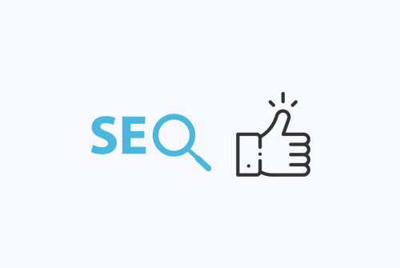
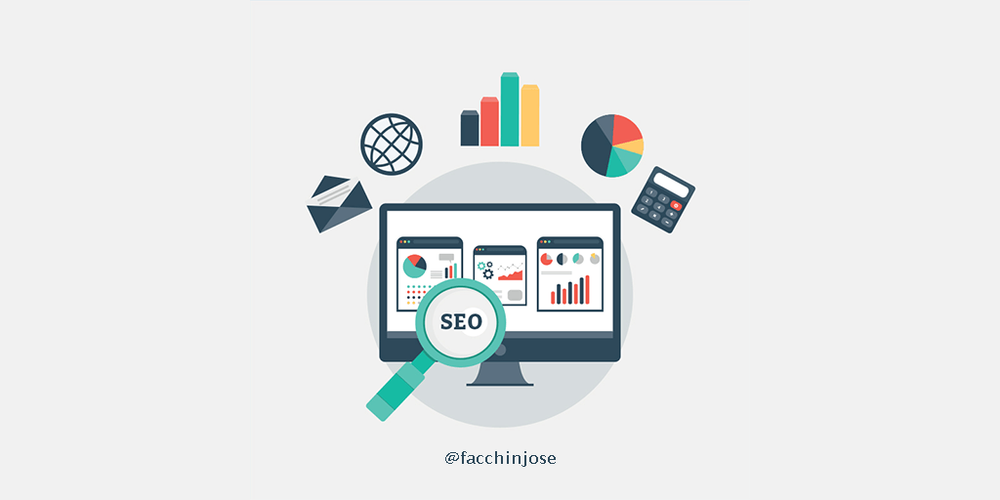
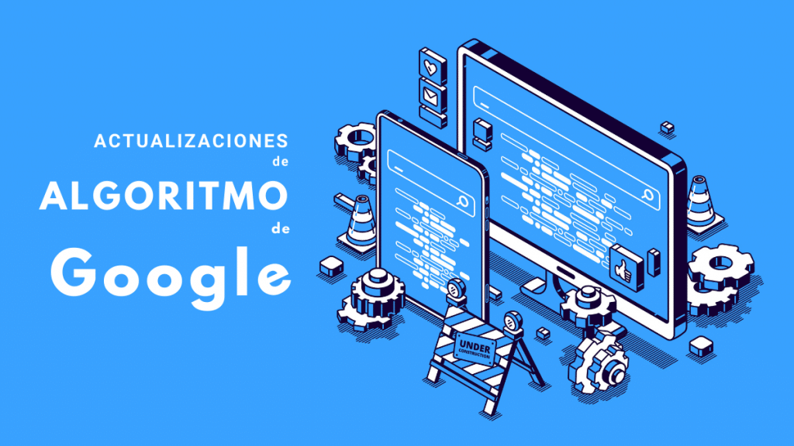

El posicionamiento en buscadores, optimización en
motores de búsqueda o SEO (del inglés search engine
optimization), es un conjunto de acciones orientadas a
mejorar el posicionamiento de un sitio web en la lista
de resultados de Google, Bing, u otros buscadores de
internet.1 El SEO trabaja aspectos técnicos como la
optimización de la estructura y los metadatos de una
web, pero también se aplica a nivel de contenidos, con
el objetivo de volverlos más útiles y relevantes para los usuarios.

Se puede dividir en dos grandes grupos:
-
On-site:
Se preocupa de la relevancia. Se asegura de que la web está optimizada para
que el motor de búsqueda entienda lo principal, que es el contenido de la misma. Dentro
del SEO On-site incluiríamos la optimización de
keywords, tiempo de carga, experiencia del
usuario, op
-
Off-site:
Es la parte del trabajo que se centra
en factores externos a la página web en la que
trabajamos. Los factores más importantes son
el número y la calidad de los enlaces, presencia en redes sociales, menciones en medios
locales, autoridad de la marca y rendimiento en los resultados de búsqueda, es decir, el
CTR que tengan nuestros resultados en un motor de búsqueda.
- ¿Por qué es el SEO importante?
La razón más importante por la que es necesario el
SEO es porque hace más útil tu página web tanto para
los usuarios como para los motores de búsqueda.
Aunque estos aún no pueden ver una página web
como lo hace un humano. El SEO es necesario para
ayudar a los motores de búsqueda a entender sobre
qué trata cada página y si es o no útil para los usuarios.

- ¿Cómo funcionan los motores de búsqueda?
Rastreo
Un motor de búsqueda recorre la web rastreando con lo que se llaman bots. Estos
recorren todas las páginas a través de los enlaces. De ahí la importancia de una buena
estructura de enlaces. Al igual que haría cualquier usuario al navegar por el contenido
de la Web, pasan de un enlace a otro y recopilan
datos sobre esas páginas web que proporcionan
a sus servidores.
El proceso de rastreo empieza con una lista de
direcciones web de rastreos anteriores y de
sitemaps proporcionada por otras páginas web.
Una vez acceden a estas web, los bots buscan
enlaces a otras páginas para visitarlas. Los bots se
sienten especialmente atraídos por los sitios nuevos y a los cambios en las web
existentes.

Son los propios bots los que deciden qué páginas visitar, con qué frecuencia y cuánto
tiempo van a rastrear esa web, por eso es importante tener un tiempo de carga óptimo
y un contenido actualizado
Indexación
Una vez que un bot ha rastreado
una web y ha recopilado la
información necesaria, estas
páginas se incluyen en un índice.
Ahí se ordenan según su contenido,
su autoridad y su relevancia. De
este modo, cuando hagamos un
consulta al motor de búsqueda le
resultará mucho más fácil
mostrarnos los resultados que están más relacionados con nuestra consulta.
Al principio los motores de búsqueda se basaban en el número de veces que se repetía
una palabra. Al hacer una búsqueda rastreaban en su índice esos términos para
encontrar qué páginas los tenían en sus textos, posicionando mejor la que más veces lo
tenía repetido. Actualmente, son más sofisticados y basan sus índices en cientos de
aspectos diferentes. La fecha de publicación, si contienen imágenes, vídeos o
animaciones, microformatos, etc. son algunos de esos aspectos. Ahora dan más
prioridad a la calidad del contenido.
Una vez que las páginas son rastreadas e
indexadas, llega el momento en el que actúa
el algoritmo: los algoritmos son los procesos
informáticos que deciden qué páginas
aparecen antes o después en los resultados
de búsqueda. Realizada la búsqueda, los
algoritmos revisan en los índices. Así sabrán
cuáles son las páginas más relevantes teniendo en cuenta los cientos de factores de
posicionamiento. Y todo esto sucede en cuestión de milisegundos.
